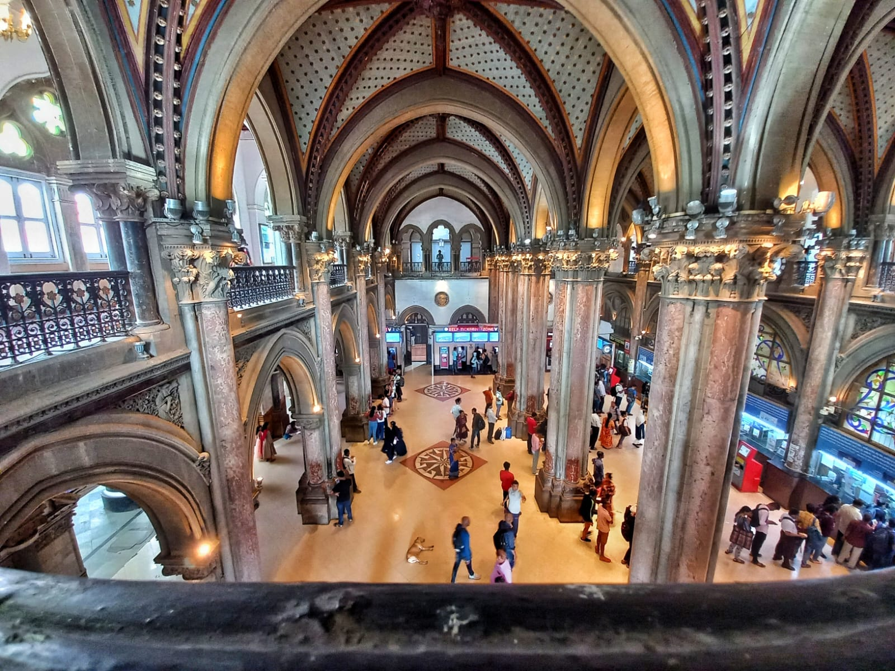
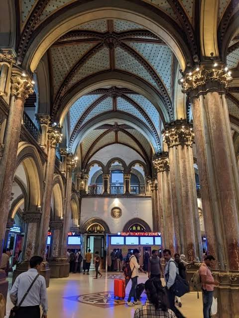
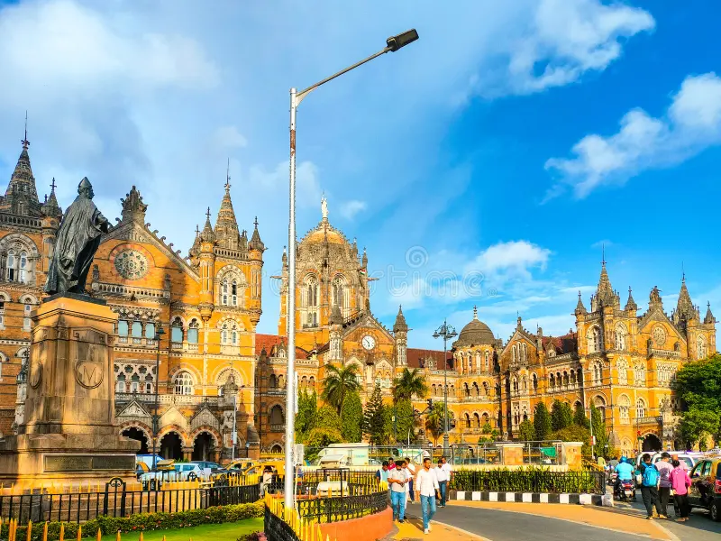

STYLE
Victorian Gothic
The building combines Victorian Gothic Revival architecture with traditional Indian architectural elements.

HERITAGE / 02
Where railway history, architecture and everyday Mumbai meet.
SCROLL TO EXPLORE
01 / A SYMBOL OF MUMBAI
Chhatrapati Shivaji Maharaj Terminus, commonly known as CSMT, is one of Mumbai's most recognisable historic landmarks.
Built during the colonial period, the station combines European architectural ideas with traditional Indian influences and continues to serve as an important railway hub.
02 / ARCHITECTURE
STYLE
The building combines Victorian Gothic Revival architecture with traditional Indian architectural elements.
DESIGN
Its facade features carved stonework, domes, arches, sculptures and decorative details.
LANDMARK
The central dome and impressive entrance create one of the building's most recognisable features.
03 / HISTORY
CSMT has witnessed the growth of Mumbai's railway network and remains an important part of the city's history.
1878–1888
The magnificent railway terminus was constructed in the late nineteenth century and officially opened in 1888.
1888
The station was originally named Victoria Terminus after Queen Victoria during the British colonial period.
2004
UNESCO recognised the building as a World Heritage Site for its architectural and historical significance.
A LANDMARK IN TIME
The magnificent terminus was completed and opened in 1888, becoming an important railway landmark in Bombay and a lasting symbol of the city's growth.
05 / VISUAL RECORD



CONTINUE EXPLORING
← BACK TO HERITAGE